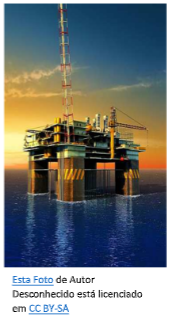
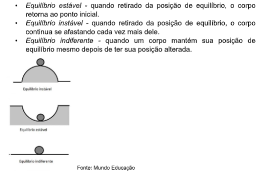
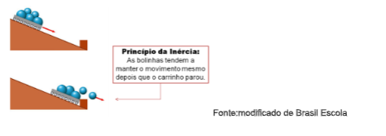
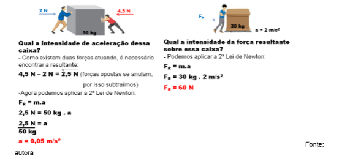
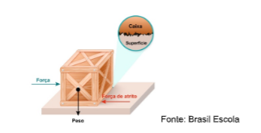
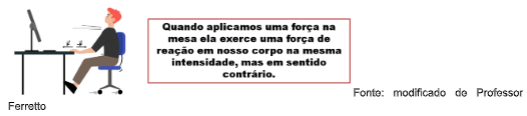
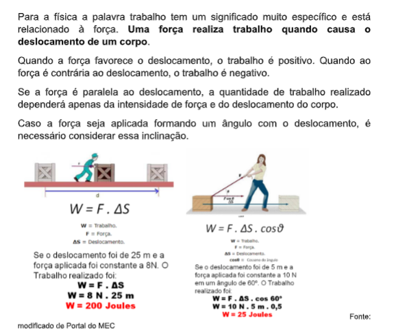
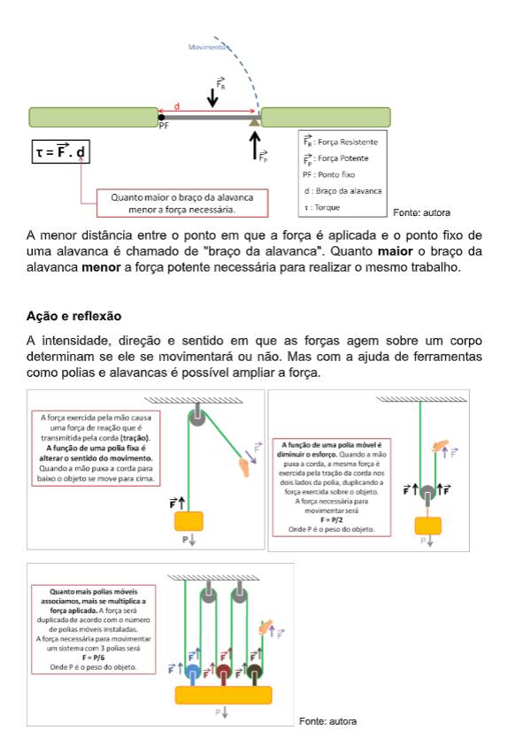
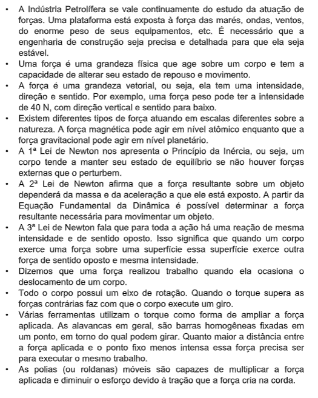

Capítulo 4
A Indústria Petrolífera, ampliação de forças e equilíbrio
Que conceitos físicos podem estar associados ao processo de extração e refino de petróleo? Podemos relacionar a situações do cotidiano?
CONTEXTUALIZANDOO avanço da física tem propiciado diversas aplicações no campo da indústria petrolífera. O grande desenvolvimento desta área do conhecimento, que influencia diretamente a engenharia, possibilitou uma espécie de explosão no desenvolvimento de plataformas de extração de petróleo, navios e unidades de processamento. Generalizando, podemos dizer que conceitos de ampliação de forças e equilíbrios dão grande suporte a este ramo de atuação. 
A força pode ser entendida, simplificadamente, como uma ação que é realizada sobre um objeto ou uma substância que seja capaz de alterar o seu estado natural. Ou seja, um corpo parado, após a aplicação de uma força, se movimenta, ou se está em movimento ao sofrer uma força varia sua velocidade ou até mesmo para.
O equilíbrio está associado a situações em que forças diversas se anulam, por exemplo, uma plataforma permanece “em pé”, pois todas as forças que atuam sobre ela são anuladas, chamamos este equilíbrio de equilíbrio estático. Outra forma em que o equilíbrio pode se apresentar são em movimentos com velocidades constantes, por exemplo, uma bomba movimentando petróleo em tubulações sempre com a mesma velocidade, significa que a força para movimentá-lo de alguma forma se cancela com o atrito dentro do tubo e a resistência do ar. Essas são explicações bastante simplificadas de conceitos que desenvolveremos um pouco mais nesse capítulo.
(Re)construindo conhecimentosForça em nossa linguagem do dia a dia não tem o mesmo significado do que na linguagem técnica da física, mais específica. Na física, força é uma grandeza que age sobre um corpo e tem a capacidade de alterar seu estado de movimento ou repouso. É possível identificar forças de diversas origens na natureza, mas todas elas são grandezas vetoriais.
Uma grandeza vetorial é expressa por três informações: o módulo (ou intensidade), a direção e o sentido em que ela atua. Em geral, as forças são representadas por setas (que indicam a direção e o sentido) e um número (que indica a intensidade).
Quando não existem forças atuando sobre um corpo ou quando todas as forças atuantes se anulam dizemos que o corpo está em equilíbrio estático (se em repouso) ou em equilíbrio dinâmico (se em movimento retilíneo uniforme).
Podemos dizer que o equilíbrio está relacionado à posição que um corpo ocupa, onde as forças atuantes sobre ele se anulam, ou seja, a posição de equilíbrio. Quando afastamos um corpo de sua posição de equilíbrio podemos esperar três tipos de comportamentos, que definem os tipos de equilíbrio:
O equilíbrio irá se manter até que seja aplicada alguma força. Ou seja, força é a causa da variação de velocidade e aceleração produzida em um corpo. A intensidade de uma força é medida em Newtons (unidade de medida internacional).
A tendência de um corpo a manter seu equilíbrio é conhecida como Princípio da Inércia ou 1ª Lei de Newton. É fácil percebê-la em nosso cotidiano. Quando um ônibus acelera e inicia o movimento, nosso corpo se desloca no sentido contrário, tendendo a manter o equilíbrio estático. Já quando o ônibus está em movimento e para, nosso corpo é projetado para a frente, pois sua tendência é manter o movimento.
A 2ª Lei de Newton, ou o Princípio Fundamental da Dinâmica nos diz que a força resultante (soma de todas as forças) atuando sobre um corpo depende diretamente da sua massa (m) e da aceleração (a) que ele sofre (F R = m.a).
Imagine que você está empurrando uma caixa de 3 kg com uma aceleração de 0,5 m/s 2 . Qual a força resultante sobre a caixa? Aplicando a 2ª lei de Newton, temos que F R = 3 kg x 0,5 m/s 2 → F R = 1,5 N.
A força resultante é uma forma de simplificar o que está acontecendo, pois quando aplicamos força para movimentar uma caixa, por exemplo, a força que aplicamos não é a única a atuar sobre ela. É necessário que a intensidade, direção e sentido sejam suficientes para anular, por exemplo, o efeito que peso e o atrito têm sobre ela.
Centenas de forças diferentes podem agir sobre um corpo. Mas algumas das principais forças, que explicam o funcionamento da natureza, são:
• Força de atrito - exercida entre duas superfícies, essa força se opõe ao movimento. Quando mais irregulares forem as superfícies, maior o atrito.
• Força centrípeta - age sobre os corpos em movimento circular, atraindo- os para o centro da trajetória.
• Força magnética - atração ou repulsão causada por objetos magnéticos.
• Força normal - é a força de reação ao peso que um corpo exerce sobre a superfície em que está apoiado. É perpendicular à superfície e contrária à força peso.
• Força peso - é a atração que a Terra exerce sobre um objeto. Atua em direção vertical em decorrência da gravidade. Quanto maior a massa de um corpo, maior a força peso.
Quando dois corpos interagem, as forças exercidas por eles são mútuas (um exerce força sobre o outro). O Princípio da Ação e Reação (ou 3ª Lei de Newton) esclarece que quando um corpo "A" exerce uma força (ação) sobre um corpo "B", este exercerá sobre "A" uma força de reação que terá a mesma natureza, a mesma intensidade a mesma direção, mas sentidos opostos.
Faça um experimento: sente em uma cadeira que não esteja presa ao chão e, sem se apoiar, levante. Você notou o movimento que a cadeira fez? A força que seu corpo exerceu sobre a cadeira é respondida com um movimento de mesma intensidade, na mesma direção, mas com sentido oposto. Enquanto seu corpo se movimentou para a frente, a cadeira se movimentou para trás.
Para saber mais
A posição em que uma força é aplicada sobre um corpo interfere na quantidade de trabalho executada. Isso significa dizer que uma força pode ser ampliada. Você já tentou girar uma maçaneta quando a haste cai e apenas o pino fica disponível? É preciso muita força para isso? Por quê conseguimos afrouxar o parafuso de um pneu com uma chave de roda, mas não conseguimos sem a ajuda de ferramentas?
Isso está relacionado ao torque. Torque é a contribuição de cada uma das forças agindo sobre um corpo que pode causar sua rotação. É uma grandeza vetorial, ou seja, tem uma intensidade, direção e sentido. Quando aplicamos força em uma maçaneta o torque gerado causa a movimentação em torno do eixo de rotação da porta, ou seja, o giro. Funciona como uma alavanca.
Para que uma alavanca funcione são necessários três elementos. Um ponto de apoio fixo, em torno do qual ela possa girar, uma força resistente (por exemplo, a força peso daquilo que se pretende movimentar) e uma força potente (exercida para causar o movimento).
A possibilidade de reduzir a quantidade de força e manter a quantidade de movimento executada (trabalho) é essencial para a indústria e, consequentemente, várias máquinas funcionam utilizando esse sistema.
Observe os quadros explicativos sobre a atuação de polias (também chamadas de roldanas) acima e procure por exemplos de máquinas cotidianas que se valem delas para a ampliação de forças. Você utiliza mecanismos de ampliação de força no seu dia a dia?
O que aprendiNesse capitulo falamos sobre como as forças atuam para manter a estabilidade dos corpos, desde coisas muito simples, como uma garrafa em cima da mesa até grandes estruturas como as plataformas petrolíferas.
